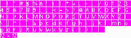

Introduction to Fonts and Images:
I've decided to introduce both fonts and images at the same time so that we can go ahead a make an almost
essential part to any RPG: The textbox.
We're going to get a bit code intensive from this point on as I will be introducing control structures and
a few more built-in functions. Though I won't be going into great detail about the reason why we are writing the
statements that we are, I will explain what each thing does, and how it relates to what we are trying to accomplish.
Ultimately, by the end of this section you will have a complete, fully-functional textbox to add to your game and, hopefully,
an understanding as to how it all works.
Images:
Use for images vary greatly in an RPG. Whether they're there to display speech portraits, menu selectors, or act as a background,
they are there. If you understood the loading part of playing sound effects, then you're a step ahead when thinking
about images. Images, like sound, must be loaded into memory before they can be displayed. That is, we must create a handle(a variable of type int)
so that when we want to display them on the screen, we have something to reference to. We'll go into more detail when we see some actual
code of using an image, however, it is worth pointing out that there are a variety of image types you can use. These include: .png, .jpg, .gif, .pcx, .tga and .bmp.
Fonts:
Fonts, if you remember, look like the image below. Like images and sounds, in order to use a font we must load it into memory by creating a handle and storing it in the variable.
Fonts are image files, which means they can be of any of the aforementioned formats in the Images section. There isn't a whole lot to say about images and fonts on there own, so let's
get right to creating a textbox.

A Basic Textbox:
Up until now we have only been dealing with map scripts. Now we're going to venture into the world of
creating our own functions, and using them within map scripts.
When writing a piece of code, it is always a good idea to try and figure out what you need to accomplish on paper first.
Generally the idea is to create what's known as pseudo-code before you actually attempt to program. Pseudo-code is basically
programming something using English. The pseudo-code for our textbox might look a little something like this:
Write some text Load an image (our textbox) Load a font (for our text) display image and text until the player presses the activation key.Seems simple enough right? Now that we have an idea of what it is that we need to accomplish, we can begin to think about what it is that verge can do to help us out. So let's look to our pseudo-code and the Verge function reference to try and figure out how we are going to do this.
Write some textIf we are going to make a textbox function, we should make it so that we can use it over and over again in our scripts. That is, we should create a new function that we can put some text into. This way we won't have to type out the 20 lines of code over and over again when the only difference is going to be the text output on screen. So, we'll need to create a function in a system vc file, so that we can call it as many times as we need it. For simplicity, we'll create a new function in "system.vc". So under our "autoexec()" function, let's create a new one.
void autoexec()
{
SetAppName("My First Verge Game!");
Map("tutorial.map");
}
void TextBox()
{
}
Remember that in the built-in functions,that we have used so far, we have entered something inside the brackets. ie. "EntitySpawn(5,5,"darin.chr");"?
We passed arguments to the function that manipulated the output. In this case we made it so Darin's .chr file was placed at the map co-ordinates, 5, 5. If we were
to change any one of those arguments the output would be completely different.
int EntitySpawn(int x, int y, string chrfile)
{
DoStuff();
}
When think back to our pseudo-code, we know that we are going to want to be able to change the output every time we call our new function. So, we are
going to want to add an argument, or two, or three, to our textbox function so that we have the ability to change the output every time we call it.
void TextBox(string text)
{
}
Having this argument now gives us the ability to manipulate the output so that when we call the function TextBox(), we can now write:
void SomeMapScript()
{
TextBox("Hi! Isn't Vecna the greatest?!!!!");
}
Which, by the time we're finished, will create a textbox and write the phrase "Hi! Isn't Vecna the greatest?!!!!" onto the screen.
This is all because we created an argument, a variable of type string, called "text" that we can change to anything that we want.
Load an image (our textbox)As I mentioned before verge loads images just like it loads sounds. We're going to need a new variable, and we're going to need a built-in function to tell verge to store our image in that variable. If we search through the v3 function reference (or vergeC.txt) we will find a function that does exactly this. It's called LoadImage(). Handy that. So let's load the image I included with the basic package, "textbox.pcx".
void TextBox(string text)
{
int TextBg = LoadImage("textbox.pcx"); // Load an image and prepare it for use
}
Now we have an image stored in memory, and we can use it by referencing to the handle "TextBg", when we want to use it.
Load a font (for our text)Just like images and sounds, we'll create a handle, use a built-in function and load our font. Let's use the font I included "smallfont1.gif".
void TextBox(string text)
{
int TextBg = LoadImage("textbox.pcx"); // Load an image and prepare it for use
int MyFont = LoadFont("smallfont1.gif"); // Load a font and prepare it for use
}
Our font is now ready for use!
display image and text until the player presses the activation key.This is the heart of what we are going to do. It may not seem like it but there is a lot we'll have to do here, and all the while we need to keep doing it until our player presses the activation key. This is a good time to introduce the concept of "loops.
while(x<5) // While the variable "x"'s value is less than 5....
{
DoStuff(); // Call this command
x+=1; // and increase the value of "x" by 1.
}
This looks fairly complicated, but it really isn't that difficult of a concept. Basically, somewhere in a function we have created an integer variable "x"
and have told the engine to repeat the function "DoStuff()" until the value of "x" is equal to 5. That is, if the original value of "x" was 0, then "DoStuff()"
would be called 5 times increasing the value of "x" by 1, each time.
We'll assume that the value of x was originally 0 Begin Loop Call DoStuff() Increase value of x by 1, x now equals 1. Because it is still less than 5.... Call DoStuff() Increase value of x by 1, x now equals 2. Because it is still less than 5.... Call DoStuff() Increase value of x by 1, x now equals 3. Because it is still less than 5.... Call DoStuff() Increase value of x by 1, x now equals 4. Because it is still less than 5.... Call DoStuff() Increase value of x by 1, x now equals 5. Because x is no longer less than 5.... The Conditions for this loop are broken. End Loop.I hope that makes sense, as it is an important aspect in programming with vergeC. Since this isn't a programming tutorial we're now finished with the concepts behind "loops". This example was just so that you have a basic idea of how they work.
void TextBox(string text)
{
int TextBg = LoadImage("textbox.pcx");
int MyFont = LoadFont("smallfont1.gif");
while()
{
}
}
We're going to need to tell verge a condition to keep looping the stuff we're going to put inside the while loop. In our case, we want it to keep looping
until the player presses the "Enter" key. So the condition is:
while the enter key is not pressed...Do stuffVerge has a few handy built-in variables that can make this a little easier on us. There are four which correspond to the keyboard. These are b1, b2, b3 and b4. The one we are concerned with right now is b1 as it, by default, corresponds to the "Enter" key on the keyboard. You can set it so that b1 is a different key, however it's best just to stick to the defaults for now. ~_^
while(b1==0) // while the value of b1 is equal to 0 while(!b1) // while b1 is NOT equal, that is, doesn't have a value greater than 0What's the difference? There isn't one, (for our purposes) except the operator that is used. Check out The Operators section in the V3 Manual to learn more about them. We're going to use the NOT(!) operator in our example, as it is my preferred way of doing things. :)
void TextBox(string text)
{
int TextBg = LoadImage("textbox.pcx");
int MyFont = LoadFont("smallfont1.gif");
while(!b1)
{
}
}
So now when it reaches our loop it will repeat everything we put inside the braces until the enter key is pressed. Groovy.
void TextBox(string text)
{
int TextBg = LoadImage("textbox.pcx");
int MyFont = LoadFont("smallfont1.gif");
while(!b1)
{
Render(); // Clear the screen
Blit(0,178,TextBg,screen); // Display our image
PrintString(10,185,screen,MyFont,text); // Put our text on the image
ShowPage(); // Show our image and text on the screen
}
}
Whoa! There's a lot to digest there, so let's look at what we've done.
Render();This function draws all the entities and map to the "screen". It will clear the screen for us, so that if there is something currently drawn to the "screen", that we don't need anymore, it will be taken off.
Blit(0,178,TextBg,screen);Here we make a call to do what is called "Blitting" an image. That is we are displaying the image we loaded onto the screen.
PrintString(10,185,screen,MyFont,text);This function takes 5 arguments. The x and y co-ordinates where the text will be displayed, where we are displaying it, the handle we used to load our font and what text is written. In our case, we want to the text output to change depending on what we write when we call our function, TextBox(); so we'll input the string variable we created way back when we created our function.
ShowPage();This makes it so all the stuff we have drawn to the "screen" is displayed on our monitor. We MUST have this if we want to see our text and textbox image.
void TextBox(string text)
{
int TextBg = LoadImage("textbox.pcx");
int MyFont = LoadFont("smallfont1.gif");
while(!b1)
{
Render();
Blit(0,178,TextBg,screen);
PrintString(10,185,screen,MyFont,text);
ShowPage();
}
FreeImage(TextBg);
FreeFont(MyFont);
}
So now when the loop is terminated, by pressing enter, verge moves on to what comes AFTER the loop. In this case a call to FreeImage and FreeFont.
void TextBox(string text)
{
int TextBg = LoadImage("textbox.pcx");
int MyFont = LoadFont("smallfont1.gif");
while(!b1)
{
Render();
Blit(0,178,TextBg,screen);
PrintString(10,185,screen,MyFont,text);
ShowPage();
}
Unpress(1);
FreeImage(TextBg);
FreeFont(MyFont);
}
We make a call to Unpress() so as to force verge to think that the key is no longer being pressed. If we left this out, there is a chance that verge would
recall the function. Why does this happen if the conditions of the loop are no longer valid? Turns out it has nothing to do with our script at all. When we activate Crystal's entity to call
our script we press "Enter" to do it. We also use "Enter" to terminate our function. So, if we are still holding onto the "Enter" key when the function is terminated, it gives control back to
the engine, sees enter has been pressed, and so it will activate Crystal's entity, over and over again, unless we force verge to "Unpress" the key. We do this using the built-in function Unpress(1);
The number inside the brackets, 1, corresponds to the the variable b1, which by default is the "Enter" key. It is important to understand that certain numbers correspond to the variables. That is, if we used b2
(which is the left ALT key by default) instead of b1, in our loop, instead of Unpress(1); we would call Unpress(2); If we used b3 (Esc by default), use Unpress(3);, etc.
void TalkToCrystal()
{
TextBox("Hola!");
}
Now when we move Darin and press enter by Crystal our textbox image will appear with the text "Hola!" written in our font over
top of it, until we press Enter. Booyah.
void TextBox(string text, string text2, string text3, string text4)
{
int TextBg = LoadImage("textbox.pcx");
int MyFont = LoadFont("smallfont1.gif");
while(!b1)
{
Render();
Blit(0,178,TextBg,screen);
PrintString(10,185,screen,MyFont,text);
PrintString(10,195,screen,MyFont,text2);
PrintString(10,205,screen,MyFont,text3);
PrintString(10,215,screen,MyFont,text4);
ShowPage();
}
Unpress(1);
FreeImage(TextBg);
FreeFont(MyFont);
}
Notice how the "y" co-ordinate in the PrintString() functions increase by 10? This is so that the lines of text don't overlap each other when
they are displayed. If we just copied and pasted the original call to PrintString, all four lines of text would appear in the same spot, leaving
us with a garbled mess. By increasing it by 10 we create a new line for the text to appear on. :)
void TalktoCrystal()
{
TextBox("Crystal:","Hola!","As you can see, I can speak a","lot more than before!");
}
A question you might now ask is, "What if I don't need to use all four lines when I call the function?", well when you call the function you still need to pass four arguments regardless.
In the case of strings, we can simply denote "No-text" by using double quotes. For example:
void TalkToCrystal()
{
TextBox("Crystal:","Only need one line!","","");
}
Notice the quotes, and how they are seperated by commas? This is still a very valid call to this function, except nothing will be displayed
on the 3rd and 4th lines, when you talk to Crystal.